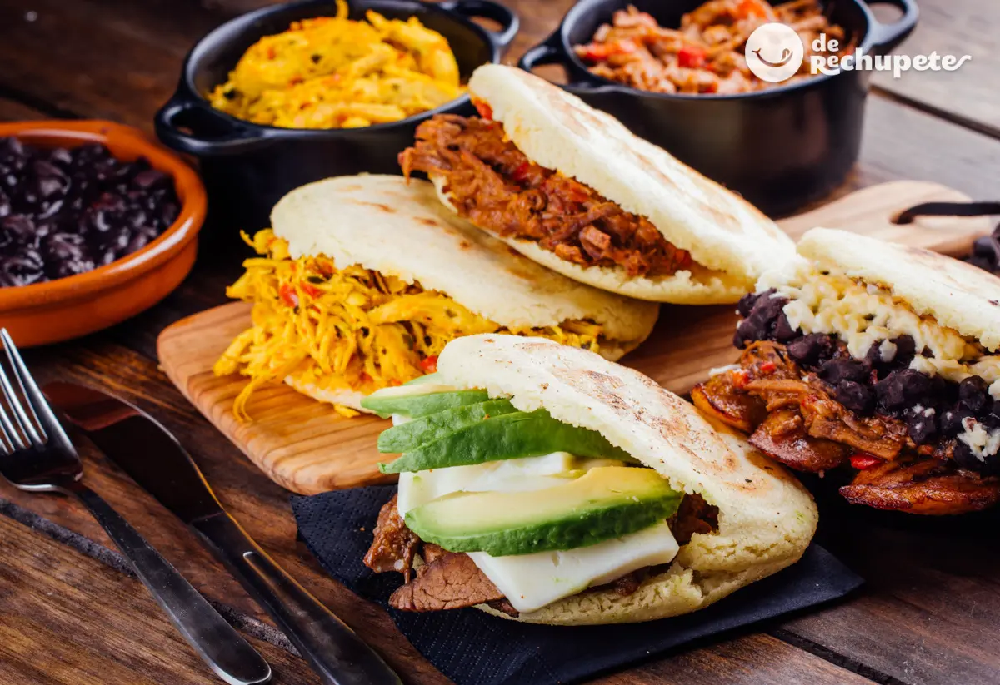

AREPAS
Las Arepas son un plato tradicional en venezuela, preferida para el desayuno o cena dada la versatilidad de su relleno ,
puede ser desde jamon y queso como el asado que quedo del dia anterior. para su preparación necesitaras los siguientes ingredientes.
INGREDIENTES
- 2 Taza de harina de maiz para Arepas
- 1 Cucharadita de sal
- 2 Tazas de agua tibia.
MODO DE PREPARACION
Mezcla el agua tibia con la sal hasta disolver y añade poco a poco la harina.
revolve hasta que la masa este compacta pero suave y facil de moldear.
Hace bolitas de masa con la mano y aplastalas suavemente.
Coloca las arepas en una sarten a fuego medio bajo para que se doren y se sellen externamente.
Luego podes hornearlas por 5 minutos en cada lado para dejarlas crujientes por fuera y suaves por dentro.
Retiralas del horno y rellena con lo que prefieras.
A disfrutar!
